Twelve agent CLIs built in. Any other is one JSON plugin away.
Claude CodeCodexGrok BuildCursor AgentQoder CLIHermesFactory DroidPioh-my-piDeepSeek HarnessKimi CodeGemini CLIOpenCodeplugin
137.5°
Packed like sunflower seeds.
Each dot is a session, turned 137.5° from the last, the golden angle. However many you run, none hides behind another, and the ones that need you stand out.
θₙ = n × 137.508°rₙ = c √nφ = (1 + √5) / 2 = 1.6180339…
Needs youRunningReady for reviewDone
θ
1F₁ · Side by side
Every agent in a real terminal, side by side
Claude Code, Codex, Grok and the rest run as themselves, not through a wrapper. Fibo lays them out in panes and tabs, keeps them alive in a background host, and reads their state from the terminal and their transcripts.
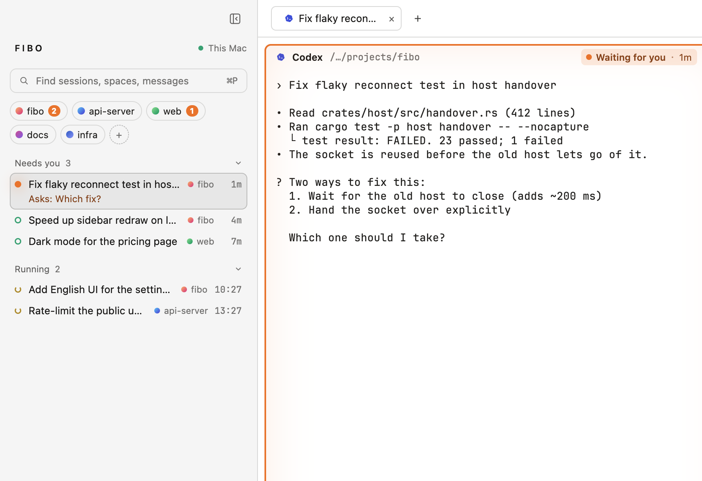
Your CLIs, unchanged
Fibo doesn't touch an agent's model or loop. Anything else runs in a plain terminal, drawn by libghostty.
Terminals outlive the window
Close the window or let the app update itself; every terminal keeps running. After a reboot, interrupted sessions offer to resume.
Spaces per project
Group sessions by folder or repository and switch between them without losing a single scrollback line.
1F₂ · Needs you
Know who is waiting without checking every tab
One counter in the corner and one board for the whole desk. Running, waiting for you, ready for review, stopped: every session has exactly one state, and ⌘J jumps to the next one that needs you.
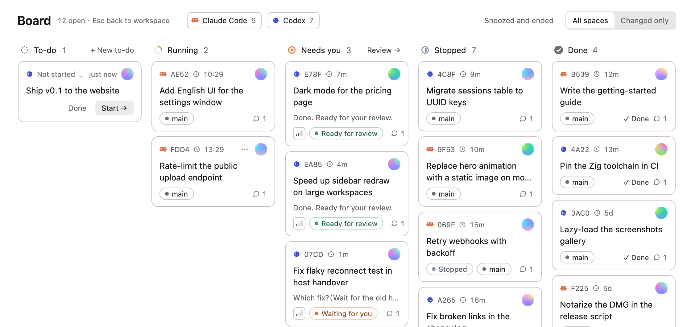
A board for every agent
Columns by state, cards by session, colored by space. Snoozed and finished work stays out of the way.
Questions surface first
When an agent asks which way to go, the question itself shows on the card and in the sidebar.
Instant with hooks
Optional hooks make state changes immediate. fibo hooks uninstall removes them again.
2F₃ · Review
A finished turn is ready for review, not done
You decide when work is finished. Open a session's drawer to read the agent's last words, answer in its terminal, or mark it done. From your phone, if you're away from the desk.
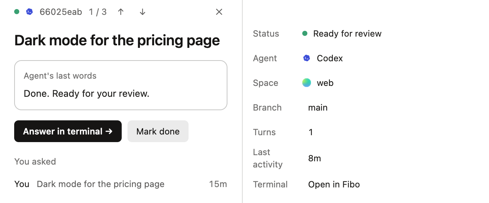
Read before you accept
Each turn keeps what you asked, what the agent said last, its branch, folder and how long it ran.
Send it back in place
Answer in the same pane. No context switch, no copy and paste between windows.
From your phone (preview)
Answer a question or approve a step while you're away. End-to-end encrypted; host the relay yourself if you like.
3F₄ · Yours
Native, fast, and made to look like yours
Rust and GPUI, drawn on the GPU, with frame-time checks in CI so a long day of sessions doesn't slow the window down. Themes, terminal colors and plugins are plain files.
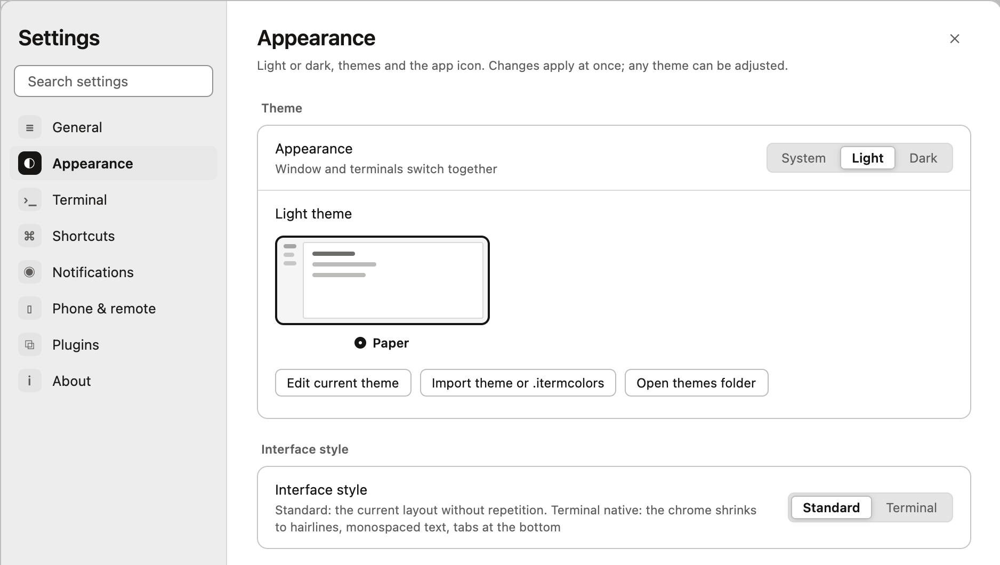
Light, dark and in between
Six built-in themes, your own .itermcolors, a background image if you want one.
Plugins as files
Add an agent, a quota source or a theme. The official catalog is signed in CI.
Stays smooth
Hundreds of sessions, one window, frames under budget. Measured on every pull request.
5F₅ · Spaces & machines
Spaces for projects. Machines for spaces.
A space is a folder you work in; its sessions stay together, and you can quiet one while you're away from it. Add another Mac over SSH and its spaces appear under it, view only. Questions from every machine reach your phone, end-to-end encrypted, through a relay you can host yourself. Below: two Macs and a quieted space, then the same sessions on the phone.
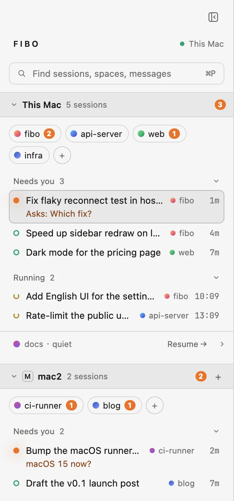
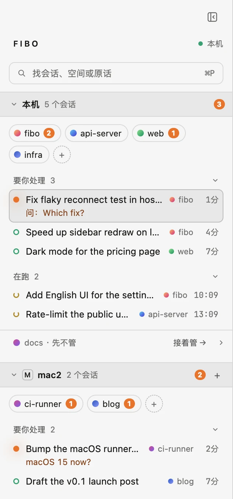
Mac · This Mac, and mac2 over SSH
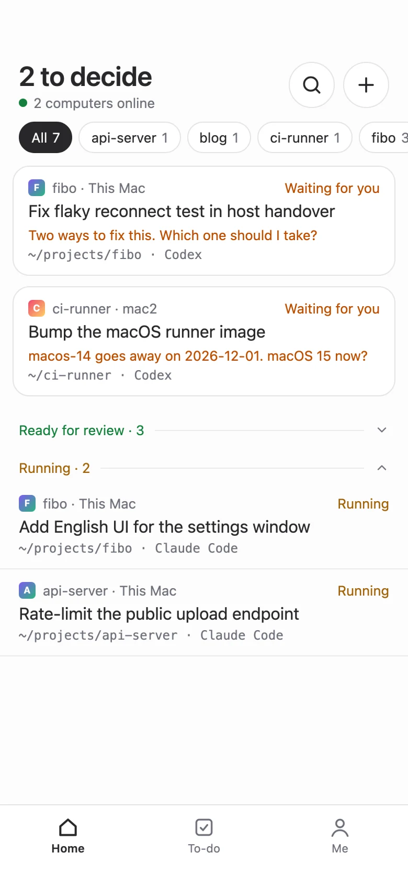
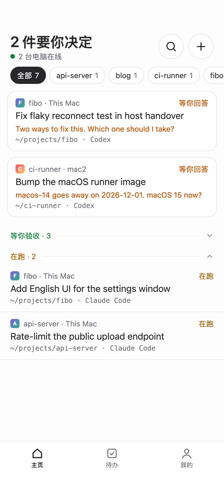
Phone · the same sessions
sessions ⊂ spaces ⊂ machines
Spaces per project
Group sessions by folder or repository; a new space on any machine is one click.
Quiet a space
Step away from a project without losing it. Starting work there again turns it back on.
More than one Mac
Any host ssh can reach without a password, with Fibo installed. Your phone joins through the relay.
8F₆ · Plugins
Plugins are files. The sidebar is one of them.
Everything below lives in ~/.config/fibo/plugins. Ask the agent in your terminal to write one; fibo plugins tells you which took effect, and why not. The official catalog is signed in CI.
~/.config/fibo/plugins/
├─ common-actions/pane menu & ⌘P commands
├─ sidebar-status/a sidebar layout (.wasm)
├─ pane-facts/facts on each pane
├─ notify-macos/hooks on state changes
├─ project-checks/verification rules
├─ complete-stamp/a completion animation
├─ theme-harbor/a theme
├─ claude-quota/a quota source
└─ opencode/a new agent CLI
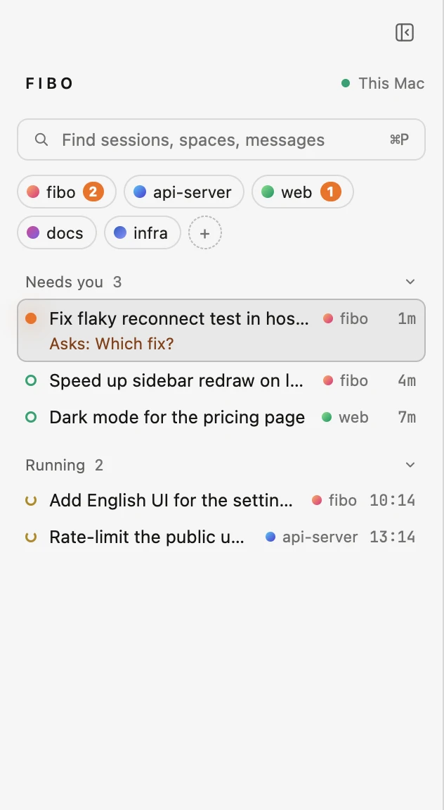
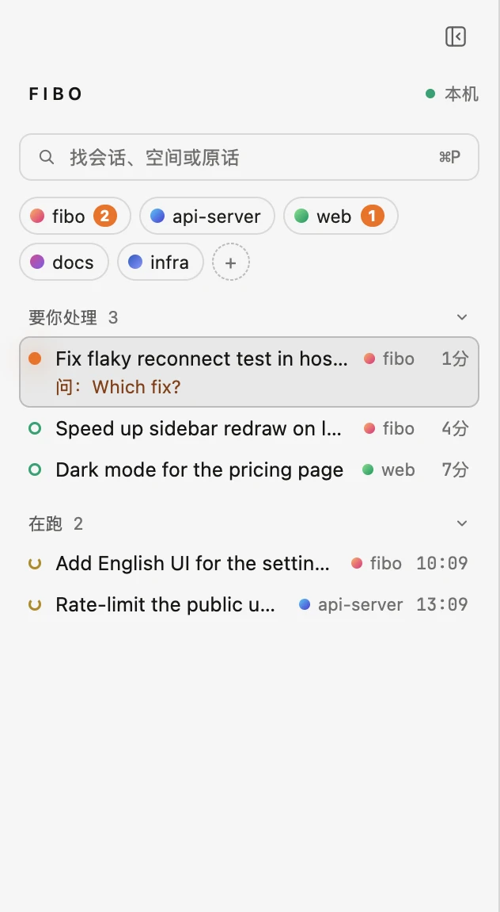
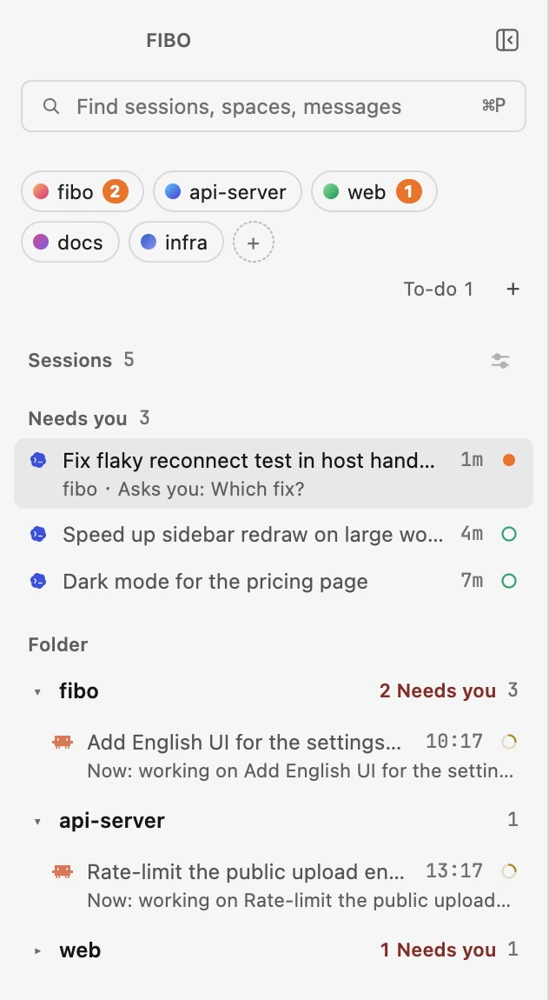
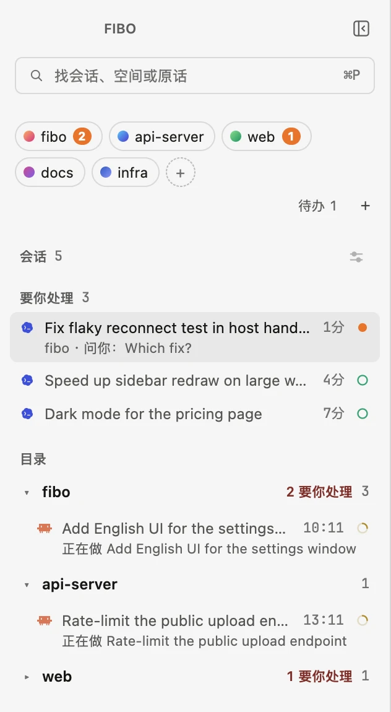
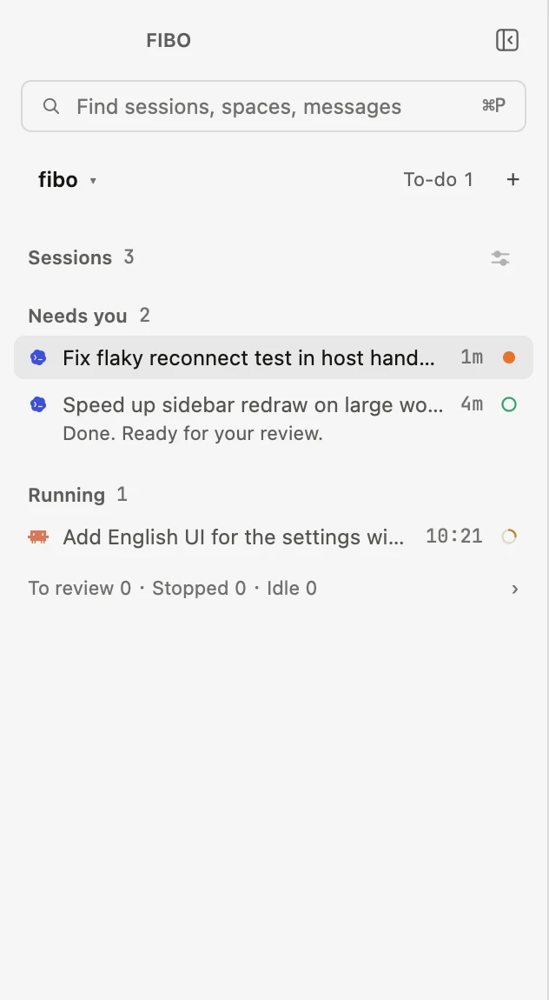
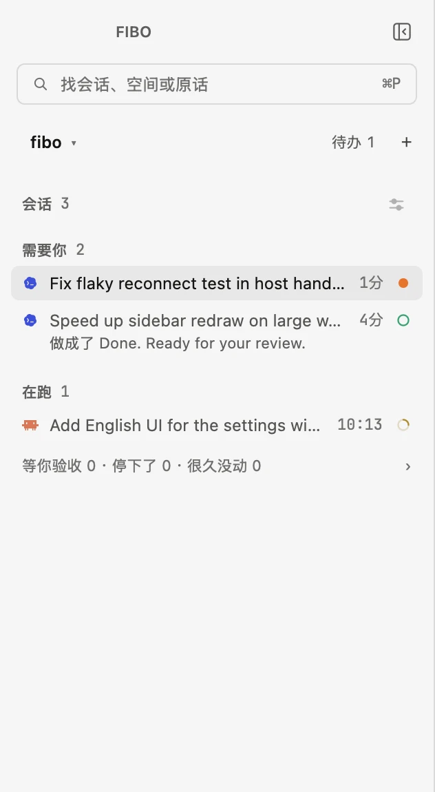
Built in · the defaultBuilt in · grouped by folderPlugin · sidebar-status.wasmsidebar = f(sessions) · swap f, keep the sessions
Ask, don't configure
"Add a menu item that runs npm test beside this pane." The agent reads fibo --skill plugins, writes it, checks it.
Replace the sidebar
Pick a built-in layout, or ship your own as WebAssembly. If yours fails, Fibo falls back to a plain list and says why.
Signed catalog
Install, update and switch plugins in Settings; they take effect at once.
13F₇ · Motion
Motion when you want it. None when you don't.
Choose how a session looks when you mark it done, from sixteen completion animations, and preview it in place. The spinning status dot is off by default. Turn on Reduce Motion in macOS and every effect becomes a fade.
Motion on this page. Try turning it off: the spiral, the seeds and the desk simulation all stop.
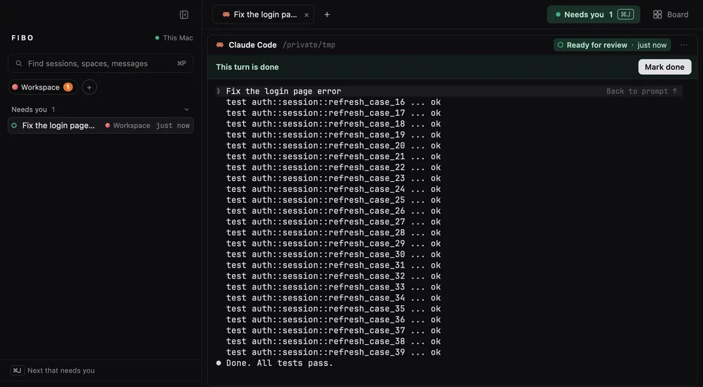
Sixteen to pick from
Stamp, sweep, confetti, a cat, tea, sunrise and more, each a plugin. Or write your own.
Quiet by default
The spinning status dot costs a little battery, so it starts off. Turn it on in Settings if you like it.
Respects your Mac
With Reduce Motion on, every animation becomes a short fade.
fibo serve
Close the window. They keep working.
Terminals live in a background host, not in the window. Quit, update or crash the app and every terminal is still there when it opens again. After a reboot, sessions that were cut off offer to resume the same conversation.
Fibo
fibo serve
Click the red button.
OSC 7501
Any program can report in. One printf.
A deploy script, a test watcher, a long build: print one escape sequence and it shows up in the sidebar with a state, like any agent.
progress
SIDEBAR
deploy
fibo run
Agents can start agents. That is the name.
Inside a Fibo terminal, an agent can read and drive the others. fibo run starts another agent with a task, and each turn it ends comes back into the caller's input as a report, so nobody polls. Sub-agents open underneath the session that started them.
$ fibo list
$ fibo run codex "review the diff on this branch and list real bugs only"
$ fibo --skill # the full guide, written for agents
In 1202 Fibonacci counted rabbits this way: every pair that has grown up starts one more. 1, 1, 2, 3, 5, 8, 13.
Everything else
It is a good terminal first. Everything else is built on that.
Splits
Tabs and splits
Split right or down and move between panes by direction. Every ⌘ shortcut can be rebound.
⌘P
One search box
Finds sessions, spaces and messages, and runs commands.
Paths
Click a path, land on the line
⌘-click pane.rs:651 to open it at that line in Zed, VS Code or Cursor.
To-do
To-dos
Write it down when you think of it; hand it to an agent later.
Limits
Quota
The status bar shows your Codex, Claude and Grok quota.
Sub-agents
Sub-agents
Sub-agents a session started open underneath it.
Find
Find in terminal
Search the scrollback, with shortcuts to jump to the top and bottom.
Type
Type
Pick the monospaced font, ligatures, line height and the CJK font separately.
Style
Two interface styles
Standard, or terminal native: chrome shrinks to hairlines, tabs at the bottom.
Update
Updates keep terminals up
A new version is verified, swapped in place, and every terminal keeps running.
Each square is a real agent terminal. The orange-framed ones are waiting for you.
Fₙ = Fₙ₋₁ + Fₙ₋₂
Add an agent. The desk keeps its shape.
Each square is one session: an agent, its task, its state. Each new one is the sum of the two before it, and the whole stays a golden rectangle. That's the promise: one more agent shouldn't make the desk harder to read.
Let n agents run at once, and let q(t) be the number waiting on you at time t. With Fibo, what you carry is q(t), not n.
Proof. Fibo derives exactly one state per session from its terminal and transcript: running, needs you, ready for review, or done. Running sessions stay quiet; only the ones that need you, or wait for review, reach the counter, and ⌘J visits them one by one. So n can grow while what you hold in your head stays q(t). ∎
A Markov chain · check Theorem 1 yourself
Run a desk. Watch what reaches you.
Every tick, each running agent may ask you something or finish its turn, with the odds in the matrix. Click a session waiting for you to answer it (or press J), click one ready for review to mark it done. Then raise n: the dashed line is how many agents run, the orange one is what waits on you. Turn autopilot off and the orange line is your backlog, whatever n is.
agents n8
needs you q0
review r0
— n— q(t)mean q 0.0
n
P =
run
.89
.06
.05
0
need
a
1−a
0
0
rev
0
0
1−m
m
done
.12
0
0
.88
Rows and columns: running, needs you, ready for review, done. a and m are you: how fast you answer and mark. Every other entry is the agents'.
Get started
Three agents running before your coffee cools.
F₁ = 1
Install Fibo
Download the notarized DMG, or brew install --cask majiayu000/tap/fibo. It updates itself.
F₂ = 1
Open a project
Pick a folder. Fibo makes it a space and finds the agent CLIs already on your machine.
F₃ = 2
Start your agents
Open a tab per task and run claude, codex or anything else, exactly as you do today.
F₄ = 3
Answer who needs you
Keep working. When the counter lights up, press ⌘J, answer, and move on to the next.
Transcripts stay on disk. Your agent CLIs still talk only to their own providers.
No lock-in
Fibo runs the tools you already use. Quit it and your agents work exactly as before.
Readable
Every state rule lives in one place in the code, with tests that keep it there.
Extensible
Agents, quota sources and themes are plugins. Write one in an afternoon.
FAQ
Questions & answers.
Is Fibo a terminal or an agent?
Neither on its own: it is a workbench around real terminals and the agent CLIs you already use. It shows their state and keeps them running; it does not replace an agent's model or loop.
Which agents does it know?
Twelve are built in: Claude Code, Codex, Grok Build, Cursor Agent, Qoder CLI, Hermes, Factory Droid, Pi, oh-my-pi, DeepSeek Harness, Kimi Code and Gemini CLI. OpenCode comes as a plugin, and others can be added the same way. Any other program still runs in a plain terminal.
Does Fibo upload my conversations?
No. Fibo reads local transcripts and does not upload them. Your agent CLIs still talk to their own providers. The optional phone link is end-to-end encrypted.
Does it change my agent settings?
Only if you install the optional hooks from the welcome screen or with fibo hooks install; they make state changes instant. fibo hooks uninstall removes them.
Wasn't this called Mooring?
Yes. It was renamed Fibo in November 2026. Existing installs keep working: the mooring command, settings and terminals carry over.
Windows or Linux?
The app is macOS only today. The shared crates build on Linux and Windows, but there is no release for them.